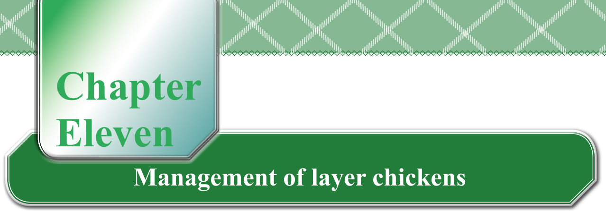

Chapter Eleven
Management of layer chickens
Introduction
In this chapter, you will learn about the management of a Day-Old Chick (DOC) to 8th week, the management of layer chickens from the 9th week to the point of laying, and the management of layer chickens from the point of laying to final culling. In addition, you will perform various husbandry practices in the management of layer chickens. The competencies developed will enable you to carry out chicken egg production enterprises to employ yourself, employ others or be employed and generate profitable income.
The layer chickens
These are special chickens that have been bred for laying of eggs. They are good at laying eggs and can lay more eggs in a year than indigenous chickens. To carry out profitable production of eggs, it is important to carefully plan and manage their housing, feeding, and health. It also needs to carefully think about how to collect, handle, store, and sell eggs as well as by-products from layer chickens. Advice can be sought from your teacher, livestock extension worker or any poultry expert during the planning and running of the enterprise. This is because always new technologies are entering the layers and the poultry sector in general.
Management of layer chickens is done in three main stages: (a) Management of Day-Old Chick (DOC) to the 8th week; (b) Management from the 9th week to the point of laying; and (c) Management from the point of laying to culling. The practices to adhere to in each of the stages are elaborated in the following sub-sections.
Management of layer chickens from day-old chick to 8th weeks
Management of DOC to 8th-week chickens will be elaborated regarding the preparation of brooding house and brooder, and management of required temperature, ventilation, lighting, humidity, feeding, stocking rate as well as disease and parasite management.